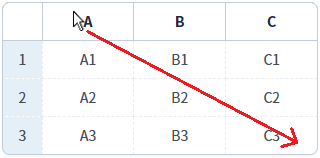
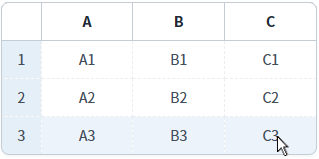
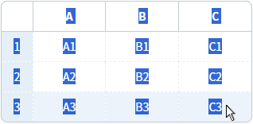
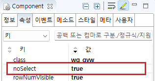

GridView의 'noSelect' 속성을 사용하여, 셀이 편집 모드가 아닐 때, 셀의 문자열을 선택할 수 없도록 설정한 예제입니다. 키보드 키(ctrl+a 등)를 또는 마우스 드래그을 통해 문자열이 선택되지 않습니다.
셀이 편집 모드가 아닌 경우 동작합니다.
문자열 선택 방지
문자열 선택 가능
예제 영역 '문자열 선택 방지'에 구성된 GridView에서 테스트합니다.1
STEP 1: 키 입력 또는 마우스를 이용해 문자열을 선택합니다.
GridView의 'A' 컬럼의 헤더부터 'C3' 셀까지 마우스로 드래그합니다
Image 1.브라우저(Chrome) 실행 예시

2
STEP 2: 실행 결과를 확인합니다.
GridView의 문자열이 선택되지 않습니다.
Image 2.브라우저(Chrome) 실행 예시

예제 영역 '(기본 설정) 문자열 선택 가능'에 구성된 GridView에서 테스트합니다.1
STEP 1: 키 입력 또는 마우스를 이용해 문자열을 선택합니다.
GridView의 'A' 컬럼의 헤더부터 'C3' 셀까지 마우스로 드래그합니다
Image 3.브라우저(Chrome) 실행 예시
2
STEP 2: 실행 결과를 확인합니다.
GridView의 문자열이 선택됩니다.
Image 4.브라우저(Chrome) 실행 예시

1
GridView의 속성을 정의합니다.
[필수] noSelect="true"
default:false, true] GridView내 문자열 선택 방지 설정 여부
Image 5.웹스퀘어 스튜디오의 Component View - 속성 설정 예시

Example 1.Source
<!-- gridView 의 소스 본문 예시 --> <w2:gridView noSelect="true"> <!-- 중략 --> </w2:gridView>
noSelect